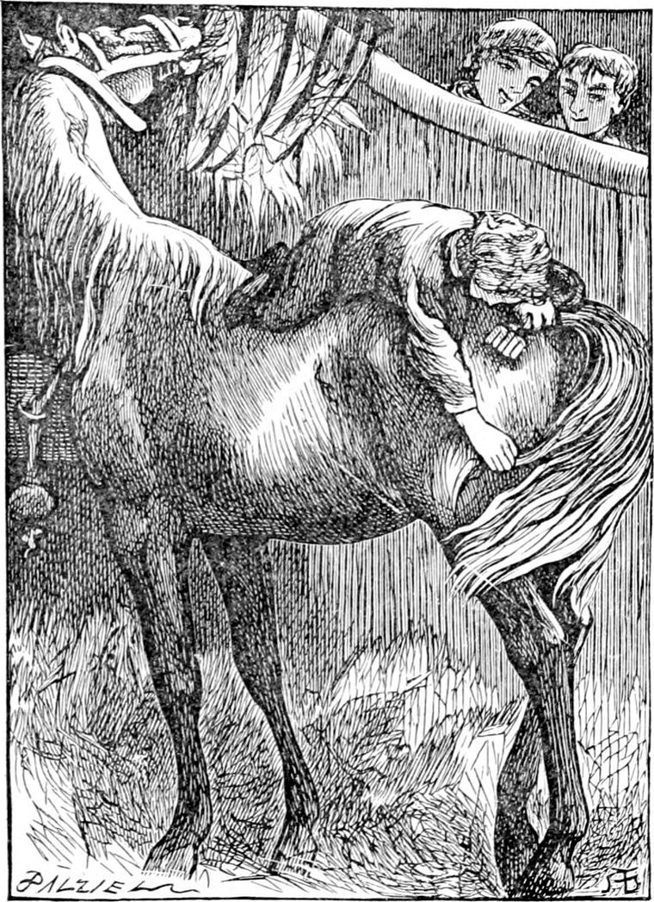
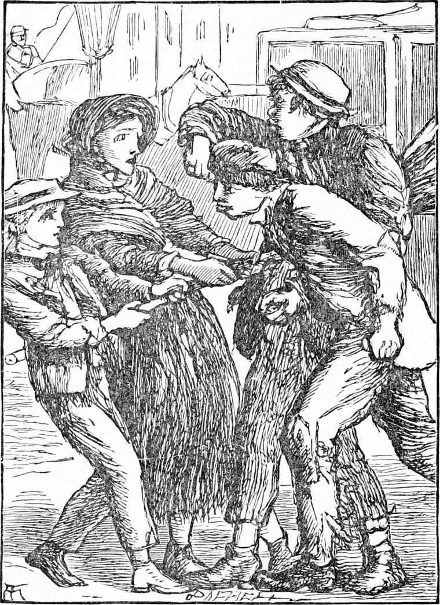
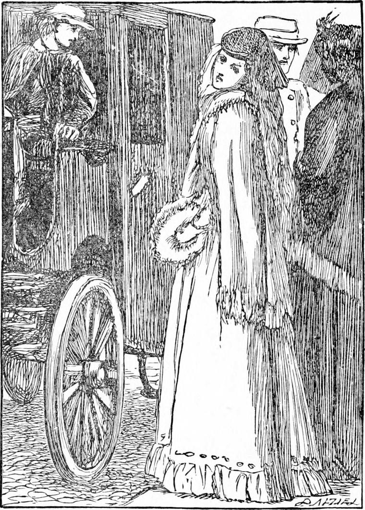

DIAMOND became a great favourite with all the men about the mews. Some may think it was not the best place in the world for him to be brought up in; but it must have been, for there he was. At first, he heard a good many rough and bad words; but he did not like them, and so they did him little harm. He did not know in the least what they meant, but there was something in the very sound of them, and in the tone of voice in which they were said, which Diamond felt to be ugly. So they did not even stick to him, not to say get inside him. He never took any notice of them, and his face shone pure and good in the middle of them, like a primrose in a hailstorm. At first, because his face was so quiet and sweet, with a smile always either awake or asleep in his eyes, and because he never heeded their ugly words and rough jokes, they said he wasn't all there, meaning that he was half an idiot, whereas he was a great deal more there than they had the sense to see. And before long the bad words found themselves ashamed to come out of the men's mouths when Diamond was near. The one would nudge the other to remind him that the boy was within hearing, and the words choked themselves before they got any farther. When they talked to him nicely he had always a good answer, sometimes a smart one, ready, and that helped much to make them change their minds about him.

One day Jack gave him a curry-comb and a brush to try his hand upon old Diamond's coat. He used them so deftly, so gently, and yet so thoroughly, as far as he could reach, that the man could not help admiring him.
“You must make haste and, grow” he said. “It won't do to have a horse's belly clean and his back dirty, you know.”
“Give me a leg,” said Diamond, and in a moment he was on the old horse's back with the comb and brush. He sat on his withers, and reaching forward as he ate his hay, he curried and he brushed, first at one side of his neck, and then at the other. When that was done he asked for a dressing-comb, and combed his mane thoroughly. Then he pushed himself on to his back, and did his shoulders as far down as he could reach. Then he sat on his croup, and did his back and sides; then he turned around like a monkey, and attacked his hind-quarters, and combed his tail. This last was not so easy to manage, for he had to lift it up, and every now and then old Diamond would whisk it out of his hands, and once he sent the comb flying out of the stable door, to the great amusement of the men. But Jack fetched it again, and Diamond began once more, and did not leave off until he had done the whole business fairly well, if not in a first-rate, experienced fashion. All the time the old horse went on eating his hay, and, but with an occasional whisk of his tail when Diamond tickled or scratched him, took no notice of the proceeding. But that was all a pretence, for he knew very well who it was that was perched on his back, and rubbing away at him with the comb and the brush. So he was quite pleased and proud, and perhaps said to himself something like this—
“I'm a stupid old horse, who can't brush his own coat; but there's my young godson on my back, cleaning me like an angel.”
I won't vouch for what the old horse was thinking, for it is very difficult to find out what any old horse is thinking.
“Oh dear!” said Diamond when he had done, “I'm so tired!”
And he laid himself down at full length on old Diamond's back.
By this time all the men in the stable were gathered about the two Diamonds, and all much amused. One of them lifted him down, and from that time he was a greater favourite than before. And if ever there was a boy who had a chance of being a prodigy at cab-driving, Diamond was that boy, for the strife came to be who should have him out with him on the box.
His mother, however, was a little shy of the company for him, and besides she could not always spare him. Also his father liked to have him himself when he could; so that he was more desired than enjoyed among the cabmen.
But one way and another he did learn to drive all sorts of horses, and to drive them well, and that through the most crowded streets in London City. Of course there was the man always on the box-seat beside him, but before long there was seldom the least occasion to take the reins from out of his hands. For one thing he never got frightened, and consequently was never in too great a hurry. Yet when the moment came for doing something sharp, he was always ready for it. I must once more remind my readers that he had been to the back of the north wind.
One day, which was neither washing-day, nor cleaning-day nor marketing-day, nor Saturday, nor Monday—upon which consequently Diamond could be spared from the baby—his father took him on his own cab. After a stray job or two by the way, they drew up in the row upon the stand between Cockspur Street and Pall Mall. They waited a long time, but nobody seemed to want to be carried anywhere. By and by ladies would be going home from the Academy exhibition, and then there would be a chance of a job.
“Though, to be sure,” said Diamond's father—with what truth I cannot say, but he believed what he said—“some ladies is very hard, and keeps you to the bare sixpence a mile, when every one knows that ain't enough to keep a family and a cab upon. To be sure it's the law; but mayhap they may get more law than they like some day themselves.”

As it was very hot, Diamond's father got down to have a glass of beer himself, and give another to the old waterman. He left Diamond on the box.
A sudden noise got up, and Diamond looked round to see what was the matter.
There was a crossing near the cab-stand, where a girl was sweeping. Some rough young imps had picked a quarrel with her, and were now hauling at her broom to get it away from her. But as they did not pull all together, she was holding it against them, scolding and entreating alternately.
Diamond was off his box in a moment, and running to the help of the girl. He got hold of the broom at her end and pulled along with her. But the boys proceeded to rougher measures, and one of them hit Diamond on the nose, and made it bleed; and as he could not let go the broom to mind his nose, he was soon a dreadful figure. But presently his father came back, and missing Diamond, looked about. He had to look twice, however, before he could be sure that that was his boy in the middle of the tumult. He rushed in, and sent the assailants flying in all directions. The girl thanked Diamond, and began sweeping as if nothing had happened, while his father led him away. With the help of old Tom, the waterman, he was soon washed into decency, and his father set him on the box again, perfectly satisfied with the account he gave of the cause of his being in a fray.
“I couldn't let them behave so to a poor girl—could I, father?” he said.
“Certainly not, Diamond,” said his father, quite pleased, for Diamond's father was a gentleman.
A moment after, up came the girl, running, with her broom over her shoulder, and calling, “Cab, there! cab!”
Diamond's father turned instantly, for he was the foremost in the rank, and followed the girl. One or two other passing cabs heard the cry, and made for the place, but the girl had taken care not to call till she was near enough to give her friends the first chance. When they reached the curbstone—who should it be waiting for the cab but Mrs. and Miss Coleman! They did not look at the cabman, however. The girl opened the door for them; they gave her the address, and a penny; she told the cabman, and away they drove.

When they reached the house, Diamond's father got down and rang the bell. As he opened the door of the cab, he touched his hat as he had been wont to do. The ladies both stared for a moment, and then exclaimed together:
“Why, Joseph! can it be you?”
“Yes, ma'am; yes, miss,” answered he, again touching his hat, with all the respect he could possibly put into the action. “It's a lucky day which I see you once more upon it.”
“Who would have thought it?” said Mrs. Coleman. “It's changed times for both of us, Joseph, and it's not very often we can have a cab even; but you see my daughter is still very poorly, and she can't bear the motion of the omnibuses. Indeed we meant to walk a bit first before we took a cab, but just at the corner, for as hot as the sun was, a cold wind came down the street, and I saw that Miss Coleman must not face it. But to think we should have fallen upon you, of all the cabmen in London! I didn't know you had got a cab.”
“Well, you see, ma'am, I had a chance of buying the old horse, and I couldn't resist him. There he is, looking at you, ma'am. Nobody knows the sense in that head of his.”
The two ladies went near to pat the horse, and then they noticed Diamond on the box.
“Why, you've got both Diamonds with you,” said Miss Coleman. “How do you do, Diamond?”
Diamond lifted his cap, and answered politely.
“He'll be fit to drive himself before long,” said his father, proudly. “The old horse is a-teaching of him.”
“Well, he must come and see us, now you've found us out. Where do you live?”
Diamond's father gave the ladies a ticket with his name and address printed on it; and then Mrs. Coleman took out her purse, saying:
“And what's your fare, Joseph?”
“No, thank you, ma'am,” said Joseph. “It was your own old horse as took you; and me you paid long ago.”
He jumped on his box before she could say another word, and with a parting salute drove off, leaving them on the pavement, with the maid holding the door for them.
It was a long time now since Diamond had seen North Wind, or even thought much about her. And as his father drove along, he was thinking not about her, but about the crossing-sweeper, and was wondering what made him feel as if he knew her quite well, when he could not remember anything of her. But a picture arose in his mind of a little girl running before the wind and dragging her broom after her; and from that, by degrees, he recalled the whole adventure of the night when he got down from North Wind's back in a London street. But he could not quite satisfy himself whether the whole affair was not a dream which he had dreamed when he was a very little boy. Only he had been to the back of the north wind since—there could be no doubt of that; for when he woke every morning, he always knew that he had been there again. And as he thought and thought, he recalled another thing that had happened that morning, which, although it seemed a mere accident, might have something to do with what had happened since. His father had intended going on the stand at King's Cross that morning, and had turned into Gray's Inn Lane to drive there, when they found the way blocked up, and upon inquiry were informed that a stack of chimneys had been blown down in the night, and had fallen across the road. They were just clearing the rubbish away. Diamond's father turned, and made for Charing Cross.
That night the father and mother had a great deal to talk about.
“Poor things!” said the mother. “it's worse for them than it is for us. You see they've been used to such grand things, and for them to come down to a little poky house like that—it breaks my heart to think of it.”
“I don't know,” said Diamond thoughtfully, “whether Mrs. Coleman had bells on her toes.”
“What do you mean, child?” said his mother.
“She had rings on her fingers, anyhow,” returned Diamond.
“Of course she had, as any lady would. What has that to do with it?”
“When we were down at Sandwich,” said Diamond, “you said you would have to part with your mother's ring, now we were poor.”
“Bless the child; he forgets nothing,” said his mother. “Really, Diamond, a body would need to mind what they say to you.”
“Why?” said Diamond. “I only think about it.”
“That's just why,” said the mother.
“Why is that why?” persisted Diamond, for he had not yet learned that grown-up people are not often so much grown up that they never talk like children—and spoilt ones too.
“Mrs. Coleman is none so poor as all that yet. No, thank Heaven! she's not come to that.”
“Is it a great disgrace to be poor?” asked Diamond, because of the tone in which his mother had spoken.
But his mother, whether conscience-stricken I do not know hurried him away to bed, where after various attempts to understand her, resumed and resumed again in spite of invading sleep, he was conquered at last, and gave in, murmuring over and over to himself, “Why is why?” but getting no answer to the question.